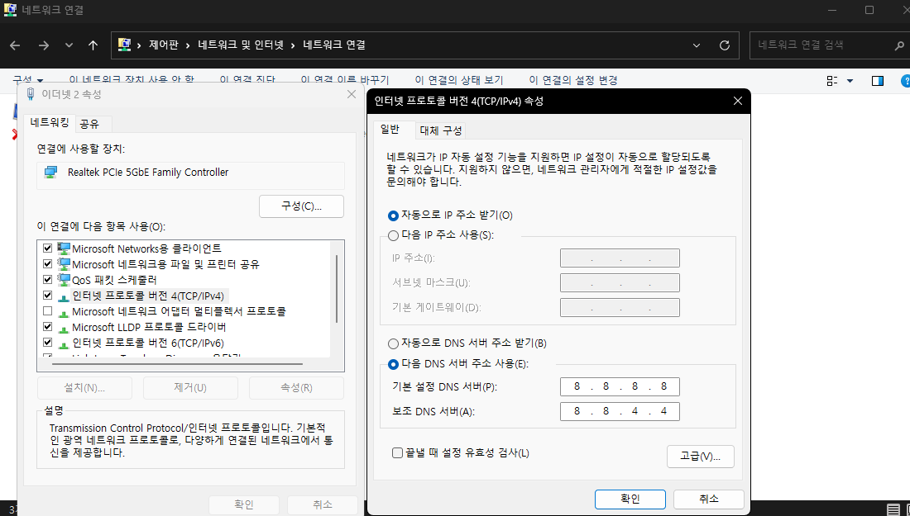

인터넷 느릴 때 DNS 바꾸는 법

혹시 크롬으로 사이트에 들어갈 때마다 로딩이 유독 오래 걸리거나 페이지가 자꾸 버벅이는 느낌이 드시나요? 그렇다면 DNS 서버를 바꿔보는 게 도움이 될 거예요.
아래 방법은 특정 브라우저가 아니라 PC 전체 인터넷 연결에 적용됩니다.
- 작업 표시줄 왼쪽 윈도우 검색창에 "네트워크 연결 보기"를 검색해서 실행
- 사용 중인 네트워크(이더넷 또는 Wi-Fi)를 선택하고 마우스 오른쪽 클릭 → "속성" 클릭
- 목록에서 "인터넷 프로토콜 버전 4(TCP/IPv4)"를 더블클릭
- "다음 DNS 서버 주소 사용"을 클릭
- 기본 설정 DNS 서버에 8.8.8.8, 보조 DNS 서버에 1.1.1.1을 입력하고 "확인" 클릭
광고 영역 (in-article)

8.8.8.8은 구글(Google) DNS, 1.1.1.1은 클라우드플레어(Cloudflare) DNS입니다. 둘 다 무료로 제공되는 안정적인 공용 DNS라 통신사 기본 DNS보다 응답 속도가 빠른 경우가 많아서, 별다른 설정 없이 체감 속도가 개선되는 경우가 많습니다.
보조 DNS 서버는 꼭 1.1.1.1이 아니어도 됩니다 — 구글의 보조 DNS인 8.8.4.4로 입력해도 상관없습니다.
광고 영역 (bottom)